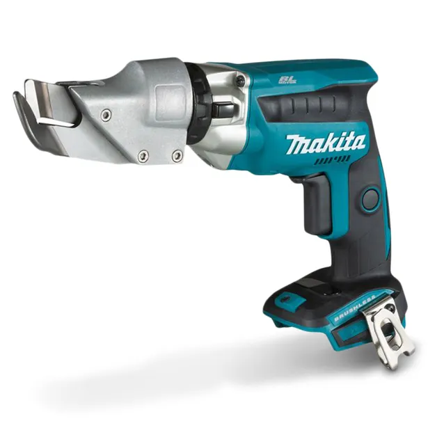

Module Intent
This module covers safe setup, pre-start checks, guarding, and correct operation of power tools.
Assessment Focus (Task 2)
Safe setup first
Confirm electrical safety, guarding, and correct accessories before operation.
Controlled operation
Use stable stance, correct grip, and steady technique to reduce kickback risk.
Hazard control in action
Manage sparks, noise, vibration, swarf, and hot material during the task.
Stop and escalate
Isolate and report immediately if a guard, accessory, or tool is unsafe.
Power Tool Pre-Start Checklist
Safe Operation Sequence
Two hands on portable tools and body balanced before start-up.
Allow full speed before contact with material.
Use steady pressure and avoid twisting discs or forcing bits.
Keep hands behind cutting path and control spark/swarf direction.
Common Hazards and Controls
Kickback
Clamp work, avoid sideways force, and maintain firm two-hand control.
Sparks and hot material
Use eye protection and direct sparks away from people and flammables.
Noise and vibration
Use hearing protection and operate tools within safe usage limits.
Swarf and dust
Clean regularly and use extraction/ventilation where required.
Guarding and Adjustments
Do not operate any power tool with missing or damaged guards.
Adjust tool rests, spark deflectors, and vice/fence positions correctly.
Set table height and depth stops before operation.
Isolate and report immediately when guarding cannot be made safe.
Power Tool Visuals
Examples of common power tools used in Task 2 practicals.
| Tool and Use | Image |
|---|---|
|
Angle grinder Cutting and grinding metal with discs. |

|
|
Bench grinder Sharpening and grinding with fixed wheels. |

|
|
Portable drill General drilling and fastening tasks. |

|
|
Cold saw Cold cutting metal to length at set angles. |

|
|
Pedestal drill (drill press) Precise, vertical drilling in fixed position. |

|
|
Nibbler / sheet metal shears Cutting sheet metal for trims, curves, and profiling. |
 |
Resource Links
- Working safely with power tools
- SafeWork NSW - Machinery and equipment
- SafeWork SA - Guarding
- Power tools Kahoot
Quiz Part B: Power Tools Matching
Select the best code for each tool. Codes describe function, safety, maintenance, and setup.
| Tool | Q1 Features and applications | Q2 Safety measures and PPE | Q3 Maintenance requirements | Q4 Adjustments and alignments |
|---|---|---|---|---|
| Drill | ||||
| Angle grinder | ||||
| Bench grinder | ||||
| Nibblers | ||||
| Cold saw | ||||
| Pedestal drill |
- Drill: Q1=5, Q2=7, Q3=17, Q4=24
- Angle grinder: Q1=1, Q2=8, Q3=14, Q4=22
- Bench grinder: Q1=2, Q2=12, Q3=16, Q4=20
- Nibblers: Q1=4, Q2=9, Q3=13, Q4=19
- Cold saw: Q1=6, Q2=10, Q3=15, Q4=21
- Pedestal drill: Q1=3, Q2=11, Q3=18, Q4=23
Quiz Part C: Power Tool Safety Questions
1) Common defects in power tools include:
2) An angle grinder has severe vibration. Most likely cause?
3) A portable power drill smells like burning. First action?
4) Which activity relating to power tool use is correct?
5) When storing power tools, it is important that:
6) When devising a work holding method, consider:
7) Which method does NOT follow WHS for holding a small workpiece?
8) Holding equipment includes:
Knowledge Check: Scenario Responses
Scenario 1: What power tool is best for drilling precise, vertical holes?
Scenario 2: Why must you never use a grinder disc with a chip or crack in it?
Scenario 3: Why do you need two hands on the grinder?
Scenario 4: Why must the grinder guard be positioned between you and the disc?
Scenario 5: What adjustment can you safely make on a pedestal drill?
Scenario 6: Why must the chuck key never be left in a drill chuck?
Scenario 7: What is “kickback” when using a grinder?